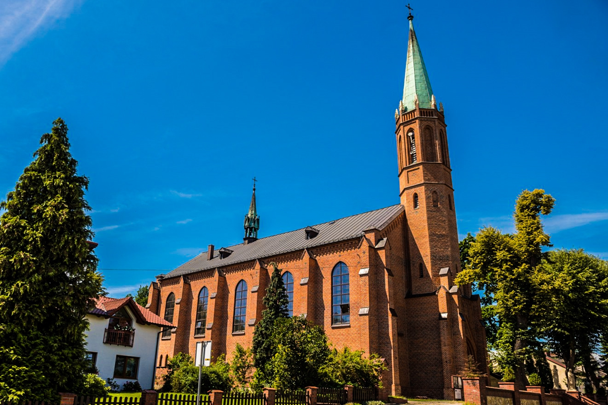

Początki parafii
Dokument Kościelny z 1376 roku Wymień raciborski archipesbiterat należącymi do niego 18 parafiami pośród tych parafii są też wymienione Janowice
Dzisiejszym odpowiednikiem archiprezbiteratu jest Dekanat archiprezbiterad raciborski należał do diecezji Wrocławskiej utworzonej w 1000 roku która była wtedy podporządkowana Archidiecezji Gnieźnieńskiej
Pierwszy kościół
Mieszkańcy zbudowali małe drewniany kościółek bo mieli daleko do kościoła w Raciborzu drewno budowę kościoła otrzymali bezpłatnie z lasu koło Żerdzin
Drugi kościół
Niestety w połowie XVII stary drewniany kościół groził zawaleniem więc rozebrano go i zbudowano nowy lecz niestety 1 września 1861 roku wybuchł wielki pożar ponieważ dzieci gospodarza bawiły się zapałkami w stodole
Trzeci kościól
W 1864 roku zaczęto budować murowany kościół który stoi do dziś

zdjęcie archiwalne - Brunon Stojer
zdjęcie z google maps